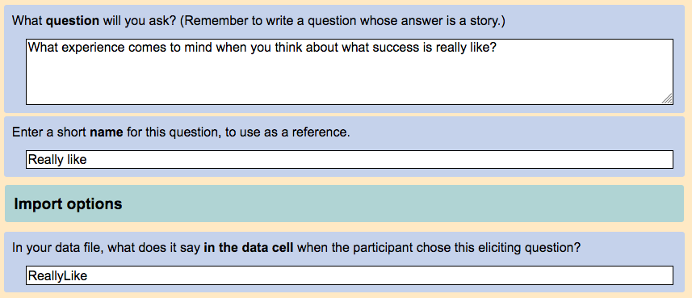
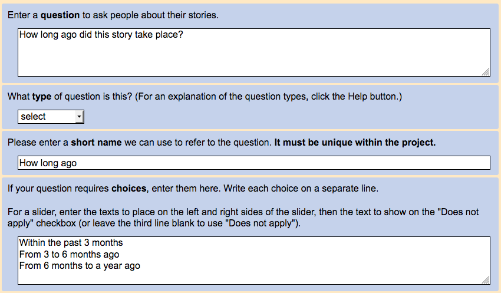
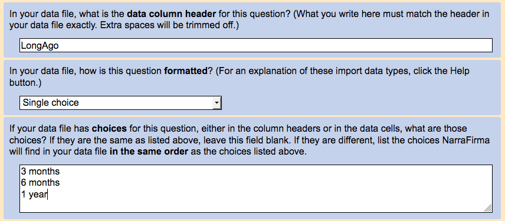
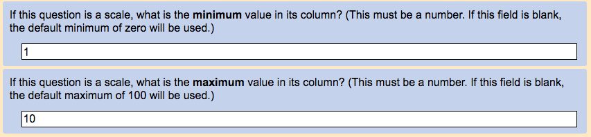

A guide to importing data into NarraFirma from other survey systems
Before you start: Requirements for a data file NarraFirma can read
NarraFirma assumes that any file of story data you import has these features:
- The file is in the CSV (comma-separated values) format.
- The file is encoded in the UTF-8 encoding format.
- The first row of the file is a header in which each cell describes the contents of the cells beneath it.
- All the cells in all the rows beneath the header contain data that match both the descriptions in the header cells
and the data types NarraFirma knows how to read (see below).
- Any rows that are not the header or data are marked as comments because the very first character in the very first cell of the row is a semicolon (;).
- Each data row contains the data for one story only.
- There are no rows that describe only participants. Participant data is repeated on each row that represents a story they told.
- Custom answers from write-in "other" options are in their own separate columns (with the question type "Text").
Written-in answers are never intermingled (in the same column) with answers listed on the survey.
If your data file doesn't meet these requirements, you will need to edit the file until it does.
NarraFirma considers these things to be optional when you import data:
- Each non-header row will usually have in it a cell with the text of a story. But you can import data with no stories. In that case, the story texts
will show up as blank spaces when you look at your stories in NarraFirma.
- Each non-header row will usually have in it a cell with the name of a story. But you can import data with no story names. In that case, NarraFirma
will assign story names of "Untitled" plus a number.
- Each non-header row will usually have in it a cell with the name of the question the participant answered by telling the story.
If there is no data on eliciting questions in your data file,
NarraFirma will assign the name of the first eliciting question in your story form as the answer to the "Eliciting question" question for each story.
If you have not defined any eliciting questions in your story form,
the answer to the "Eliciting question" question will be "What happened?" for each story (but you can ignore it).
The following sections tell you how to import data to NarraFirma from another surveying system.
Step One: Export your data to CSV
Go into your surveying system and choose either CSV (comma-separated values) or XLS (Excel) export.
If there are options for formatting your data, we recommend trying all of them,
then looking at the data files you get and seeing which format is the easiest to work with.
Open your CSV or XLS file using your favorite spreadsheet program.
Look down the columns of the spreadsheet and see if all the answers are in the right columns.
Make sure you look all the way down to the end of your file.
If you see answers to the same question scattered around in different columns, try opening the data file in a different way.
In Excel, for example, you can open a new Workbook, choose Data – Get External Data – Import Text File,
then mess with the options there until your data looks correct.
The first row in your data file should be a header row in which each cell describes the column of data beneath it.
Check that each header cell uniquely describes what lies beneath it. Familiarize yourself with your header row,
because you will need to use it to explain to NarraFirma how to read your data.
NarraFirma doesn't care about the order of columns in your data file, and it doesn't care if you have extra columns.
You are going to tell NarraFirma what columns you want it to read and what to do with the data it finds in them.
If you have more than one header row, consolidate them into one row. Or you can comment out all but one header row by typing a semicolon (;)
as the first character in the first cell of each row you want NarraFirma to ignore.
Step Three: Describe your data to NarraFirma
There are two ways to tell NarraFirma how to interpret your data:
Which to choose? If you like working in spreadsheets, you are likely to want to do that.
If spreadsheets confuse you, you are more likely to want to use NarraFirma. Both methods are identical in outcome.
In this guide, we will pretend to be importing a fictional data file that contains all of the question types NarraFirma can read. It looks like this:
| Respondent |
EQuestion |
SText |
STitle |
LongAgo |
Source |
Remember |
Feel about |
Feel about |
Needed [help] |
Needed [understanding] |
Helped |
Surprised |
Comment |
| 2554 |
Surprise |
I was surprised one day when... |
Never would have guessed |
1 year |
1 |
3 |
happy |
|
Yes |
No |
manager, colleague |
1 4 |
It's okay |
| 1543 |
ReallyLike |
It was on my last day at work... |
Finally |
3 months |
3 |
7 |
|
sad |
No |
Yes |
friend |
2 |
Really upset about this |
| 532 |
Discovered |
I never knew before that... |
Never knew |
Last week |
2 |
9 |
happy |
|
Yes |
No |
colleague, friend |
2 3 |
No comment! |
The question types in the example file are:
| Respondent |
EQuestion |
SText |
STitle |
LongAgo |
Source |
Remember |
Feel about |
Feel about |
Needed [help] |
Needed [understanding] |
Helped |
Surprised |
Comment |
| Participant identifier |
Eliciting question |
Story texts |
Story titles |
Single choice |
Single choice indexed |
Scale |
Multi-choice multi-column texts |
Multi-choice multi-column yes/no |
Multi-choice single-column delimited |
Multi-choice single-column delimited indexed |
Text |
The following descriptions of format specification using NarraFirma or a CSV file use the same example.
Describe your data to NarraFirma by building a story form in NarraFirma
When you collect data using NarraFirma as a surveying system, you follow a process like this:
- Write your eliciting questions
- Write questions about the stories people will tell in response
- Write questions you will ask people about themselves
- Bring all the questions together into a story form
When you import data into NarraFirma, it works best to follow the same sequence.
Eliciting questions
If you gave people a choice of questions to answer by telling a story, or if you asked people a series of questions (that they answered by telling stories),
you are likely to have in your data file a column that recorded which question they answered.
If you did not ask at least two eliciting questions, you can skip this step.
To enter your eliciting questions, go to the NarraFirma home page, click on Collection, then click on Write story eliciting questions.
Under the table of questions, click Add. Then enter a question and a short name to describe an eliciting question represented in your data file.
Under the Import options header, type the corresponding text exactly as it appears in your data file.
For example, the "EQuestion" column of our example data file looks like this:
| EQuestion |
| Surprise |
| ReallyLike |
| Discovered |
The "ReallyLike" eliciting question looks like this when it is created in NarraFirma:

Do this for all of the eliciting questions referred to in your data. You will tell NarraFirma the heading of the column that describes
which eliciting question each person picked ("EQuestion" in our example) when you get to creating your story form.
Questions about stories
Now look at your data file and go through all the questions that were asked about stories. Go to the NarraFirma home page, click on Collection, and then click on
Write questions about stories. For each story-related question in your data file, under the table of questions, click Add, then describe the question.
Let's try this with an example question from our data file: How long ago the story was told.
First, write out the full question, as you asked it in your survey. Then choose a question type. These are NarraFirma's internal question types,
so most of them don't apply to imported data. Choose one of these types:
- select: single-choice data
- slider: scale data
- checkboxes: multi-choice data
- text: things people said or typed in
Next, give the question a short name to be used on graphs.
Then enter the answer names (if there are any) you want to display on your graphs.
This is how the screen should look
for the "LongAgo" question in our example data file.

Now scroll down to the Import options part of the question description. This is where you need to tell NarraFirma
what to expect in your data file.
First enter the exact header name, as you see it in your data file, for the question. Then choose an import question type. The "LongAgo" question
in our example data file is of the type Single choice because its column has one text answer from a prepared list.
Next, enter the answers in your data file for that column. Make sure the answers you enter here exactly match the contents of the cells in your file.
These answer names do not have to be the same as the answer names you typed in above (where it said "If your question requires choices, enter them here").
In fact, there are two entry fields for answers precisely because you are likely to want to see nicer names on your graphs than can be found in your data file.
The order of the answers must be identical in the two lists. Make sure you double-check that the order of the two lists is the same, because
otherwise you may end up having graphs with the wrong patterns in them.
Here's what the import options for the "LongAgo" question look like in NarraFirma.

Import data types
Now let's talk about those import data types. It is important to chose the right import type for each question in your data file,
because if you don't, the data will be garbled coming in.
Single choice questions
This type of question covers one column, each cell of which contains only one text answer. That answer exactly matches one of the options given for the question
(in the "Import options" part of the question definition).
In our example data file, the "LongAgo" question is of this type:
| LongAgo |
| 1 year |
| 3 months |
| Last week |
Single choice indexed questions
This type of question covers one column, each cell of which contains a number that corresponds to the option chosen for the question.
In our example data file, the "Source" question is of this type:
When you create such a question in NarraFirma, make sure the order in which you write the answers matches the order in which the
answers were presented in your survey. The answers under the "Import options" header are ignored for this type of question, because you would
just be entering 1,2,3 and so on.
Scale questions
This type of question covers one column, and its cells contain numbers that correspond to locations along a linear scale.
In our example data file, the "Remember" question is of this type:
The default NarraFirma scale goes from zero to 100. If your scale is not from zero to 100, you can set a custom scale range in either of two places:
for each question, or for the story form in general. If all of your scale questions use the same scale, it's easier to
set the range at the story
form level. However, if each scale question has its own minimum and maximum, you can set them in the
"Import options" for each question, like this:

Text questions
This type of question is just a bit of text somebody said or typed in.
There are no answers to list for this data type.
In our example data file, the "Comment" question is of this type:
| Comment |
| It's okay |
| Really upset about this |
| No comment! |
Multi-choice multi-column text questions
This type of question covers multiple columns, one per answer. The header for each column in the set is identical - it has just the name of the question in it.
The cell values of all the columns contain exact matches for the options given for the question.
In our example data file, the "Feel about" question is of this type:
| Feel about |
Feel about |
| happy |
|
|
sad |
| happy |
|
Multi-choice multi-column yes/no questions
This type of question covers multiple columns, one per answer. The column headers in such a set are not identical.
Each has in it the question name and the answer name for that column. The cell values themselves contain a binary
indicator, like "Yes" or "No," or "1" or "0."
In our example data file, the "Needed" question is of this type:
| Needed [help] |
Needed [understanding] |
| Yes |
No |
| No |
Yes |
| Yes |
No |
A story form with this type of question in it requires you to define three import options at the level of the story form:
"Yes no questions yes indicator," "Yes no questions Q-A separator," and "Yes no questions Q-A ending."
Multi-choice single-column delimited questions
This type of question covers one column. The cells contain all of the answers to the question (which exactly match those on the given list), separated by something (usually a comma).
In our example data file, the "Helped" question is of this type:
| Helped |
| manager, colleague |
| friend |
| colleague, friend |
A story form with this type of question in it requires you to define one import option at the level of the story form:
"Multi choice single column delimiter."
Multi-choice single-column delimited indexed questions
This type of question covers one column. The cells contain all of the answers to the question, but they are not the answer texts.
They are index numbers for the chosen answers. In our example data file, the "Surprised" question is of this type:
A story form with this type of question in it requires you to define one import option at the level of the story form:
"Multi choice single column delimiter."
If your data doesn't match any of these types
If you are looking at a column of data in your file and you can't match it to any of these types,
you can usually fix the problem with some careful editing of your CSV file in a spreadsheet.
If you can't figure out what to do, find that friend or colleague who is a whiz at spreadsheets
and show them the problem. It is likely that you will find a solution. Remember to back up your work,
and keep multiple versions of your file, so you can fix mistakes.
Questions about participants
When you have got through all the questions in your data file that have to do with stories, it is time to tell NarraFirma
about the questions you asked about people. Go to the NarraFirma home page, click on Collection, and then click on Write participant questions.
Under the table of questions, click Add. Then follow the same directions as given above for story questions. In summary, for each question:
- Enter a long text, a short name, and a NarraFirma question type (choosing from select, slider, checkboxes, and text).
- Enter the answers as you want to display them (and in the order you want to see them) in your graphs.
- Under the "Import options" header, enter the data column header name, the import data type, and the answers as they appear in the file, in the same order.
- If it's a scale question, if you need to, enter a special scale range.
Once you have entered all of your eliciting questions, questions about stories, and questions about participants,
you need to enter some overall import options to help NarraFirma read your data.
Go to the NarraFirma home page,
click on Collection, and then click on Design, generate, or import story forms.
Then click on Generate story form using all existing questions. Enter a name for the story form.
It will appear in the table of story forms. Select it and click Edit.
Now look over your generated story form.
The order in which the eliciting questions, story questions, and participant questions appear in the form
is the order in which they will appear in lists. If that order is fine with you, you can leave those lists alone;
or you can edit the order placements (click a question name in any of those three lists and click "Edit.")
When you are satisfied with the order of your questions,
scroll down to the Import options section. Obviously you will want to pay a lot of attention to this section. Let's go through the options one at a time.
| Question |
What to do |
| In your data file, what is the data column header for the story title? |
Look at your data file and find the column with story titles in it. Copy and paste the exact header for that column here. |
| What is the data column header for the story text? |
Copy the header for the column that has the stories in it. |
| What is the data column header for the eliciting question? |
Copy the header for the eliciting question response here, if you have one. |
| What is the data column header for the participant ID field? |
If participants are identified in your data file, copy and paste
the header for that column of the file here. Remember that participant data must be repeated on every row of story data for that participant. |
| In your data file, what is the minimum value for your scale questions? |
If you have scale questions in your file, and they are all (or mostly)
the same, and their ranges do not go from zero to 100, enter the lowest number on your scales here. |
| What is the maximum value for your scale questions? |
Enter the highest possible number for all scales. |
| If you have any questions of the type "Multi-choice single-column delimited" or "Multi-choice single-column delimited indexed", what text separates the items within each cell? |
This is about data columns in which multiple answers look like lists (e.g., "happy,enthused,inspired"). If you have data like that, you need to tell NarraFirma
how to separate the items in each list. The most common separator is a comma, but it could be lots of other things.
Note that the same delimiter is used for both regular and indexed (1,2,3) data (which you are rarely going to have in the same file).
If your delimiter is an actual space, do not enter a space here. Enter the word "space." |
| If you have any questions of the type "Multi-choice multi-column yes/no", what text indicates a "Yes" answer? |
For the question type where the cell contents are "Yes" or "No,"
this is what signifies a "Yes" answer. Look in your data file and see what it says in the cells for that type of question.
Sometimes it will literally say "Yes," but some survey systems use other values, like "1" or "yes" (and case matters - it has to be exact). |
| If you have any questions of the type "Multi-choice multi-column yes/no" ... What is the text between the question name and the answer name in each column header? |
The headers for those yes/no choice columns describe both the question and the answer for that column.
But different surveying systems put together the question and answer names in different ways. NarraFirma assumes that yes/no headers will look like this:
- the name of the question
- something in the middle
- the name of the answer
- (maybe) something at the end
You need to tell NarraFirma what the "something in the middle" and the "something at the end" are so it can find the question and answer names.
Look at your column headers and figure out what lies between the question name and the answer name. Some common separators are a square bracket ([)
and a colon (:). Don't worry about extra spaces; they will be trimmed out.
If it is impossible to pull apart your column headers by specifying
things to find between the question and answer names (for example, if the "something in the middle" changes from one column to another),
you will need to edit your column headers using a spreadsheet program to make them fit this scheme.
|
| If you have any questions of the type "Multi-choice multi-column yes/no", what is the text after the answer name in each column header? |
This is the "something at the end" from the previous question. |
And that's it, you have described your data file to NarraFirma. You can now import your stories.
Describe your data to NarraFirma by importing a story form CSV file you created in a spreadsheet program
To describe your data to NarraFirma by importing a CSV file, the first thing you should do is create a new, empty spreadsheet file.
In the first row of the new spreadsheet, type these header column names:
| Data column name |
Type |
About |
Short name |
Long name |
Answers |
Then go back to your data file and take a good long look at its header (first) row.
Look at each column name and think about the data in that column so you can describe it to NarraFirma.
Let's go through the columns in our example data file one at a time.
Participant identifier
Your data file may identify participants by a name or number or unique ID. In our example data file, the participant IDs look like this:
If you have participant IDs in your data file, tell NarraFirma about them by creating a row in your story form CSV file that looks like this:
| Data column name |
Type |
About |
Short name |
Long name |
Answers |
|
Participant ID column name |
import |
|
|
Respondent |
This will tell NarraFirma that the cells in the column marked "Respondent" will group
stories together by who told them. It does not matter what you have in that column, as long as each participant's identifier
is unique.
Eliciting question
In our example data file, the "EQuestion" column tells NarraFirma which question people answered by telling a story. It looks like this:
| EQuestion |
| Surprise |
| ReallyLike |
| Discovered |
We can tell NarraFirma about this column by filling out a row in our story form CSV file like this:
| Data column name |
Type |
About |
Short name |
Long name |
Answers |
|
|
| EQuestion |
eliciting |
eliciting |
Eliciting question |
Please choose a question to which you would like to respond. |
Surprise|Surprise|What has been your biggest surprise in the past year? |
ReallyLike|Really like|What experience comes to mind when you think about what success is really like? |
Discovered|Discovery|What was your biggest discovery at work in the past year? |
The "Type" and "About" fields for the eliciting question must say "eliciting."
The "Short name" field sets the name of the graph used to display the choice of eliciting question.
The "Long name" field controls the actual question asked on the survey in NarraFirma.
Starting at the first column labeled "Answers," write your eliciting questions, one question per column. Within each column,
specify how NarraFirma should read and display the question, in three parts, separated by pipe characters (|):
- The text NarraFirma will find in the data cell when a participant answered that question (e.g., "ReallyLike")
- The short name you want to use to label this answer in graphs (e.g., "Really like")
- The long text for this question (e.g., "What experience comes to mind when you think about what success is really like?")
If you only enter one name (without any pipes), it will be used as all three things (the data cell name, the graph name, and the question text).
If you enter two names here, the first will be used as the data cell name and the graph name, and the second will be used as the question text.
If your data file has no column that says which eliciting question people answered, you can leave this row out of your story form file.
NarraFirma will create a generic eliciting question ("What happened?") and assign it to all of your stories.
Story texts
In our example data file, the "SText" column holds the story texts.
| SText |
| I was surprised one day when... |
| It was on my last day at work... |
| I never knew before that... |
Because there is no actual question being asked here,
you must use an import option to tell NarraFirma how to read this column. Enter a row like this:
| Data column name |
Type |
About |
Short name |
Long name |
Answers |
|
Story text column name |
import |
|
|
SText |
This tells NarraFirma that it can find your story texts in a column labeled with the header "SText".
Story titles
In our example data file, the "STitle" column holds the story titles.
| STitle |
| Never would have guessed |
| Finally |
| Never knew |
Use an import option to tell NarraFirma how to read this column.
| Data column name |
Type |
About |
Short name |
Long name |
Answers |
|
Story title column name |
import |
|
|
STitle |
Single choice questions
In our example data file, the column labeled "LongAgo" describes how long ago the events of the story happened.
The participant could choose only one of these answers. The answer chosen is listed in the cell.
| LongAgo |
| 1 year |
| 3 months |
| Last week |
To describe this type of question to NarraFirma, write a row in your story form CSV file like this:
| Data column name |
Type |
About |
Short name |
Long name |
Answers |
|
|
|
| LongAgo |
Single choice |
story |
How long ago |
How long ago did this story take place? |
Last week|In the past week |
3 months|Within the past 3 months |
6 months|From 3 to 6 months ago |
1 year|From 6 months to a year ago |
With this question type (and any other type that has fixed, prepared answers), you can give your answers nicer names (for graphs)
by writing first the name to be found in the data file (e.g., "Last week"), followed by a pipe symbol (|), followed by the
name to write on graphs (e.g., "In the past week"). If you don't want to use different names on your graphs, you can just
write the answer name once (without a pipe symbol).
Single choice indexed questions
Some survey systems don't write the actual choice the person picked in the data file. Instead, they write the index number
of the choice - that is, its place in the list of choices. For example, if the choices for "Favorite fruit" are "apple, pear, banana",
and I chose "banana," that cell in the data file will say "3", not "banana". In our example data file, the column labeled "Source"
is of this type.
Tell NarraFirma how to read a question of this type like this:
| Data column name |
Type |
About |
Short name |
Long name |
Answers |
|
|
|
| Source |
Single choice indexed |
story |
Where story came from |
Where did this story come from? |
first-person |
second-hand |
rumor and I believe it |
rumor and I don't believe it |
In this case you don't need separate data and graph names for the answers, because the "names" in the data file are digits.
Scale questions
In our example data file, the column labeled "Remember" has a series of numbers that represent locations along a linear scale.
Let's say I happen to know that I asked this question on a scale from one to ten.
NarraFirma's default scale runs from zero to 100, so I will need to tell NarraFirma that I want a custom scale range for this question.
| Data column name |
Type |
About |
Short name |
Long name |
Answers |
|
|
|
| Remember |
Scale |
story |
How long remember |
How long do you think you will remember this story? |
for a few minutes |
for the rest of my life |
1 |
10 |
The first two columns under "Answers" label the left and right sides of the scale. The third and fourth columns give the minimum and maximum values for the scale.
If all of the scales in your data file have the same range, you can leave the last two columns off and instead use an import option that applies to all the scales in the file:
| Data column name |
Type |
About |
Short name |
Long name |
Answers |
|
|
Scale range |
import |
|
|
1 |
10 |
If you specify the scale range in both places, the question scale range will take precedence (so you can set a general scale range, plus a special one for only one or a few questions).
Multi-choice multi-column text questions
The next two columns to consider in our example data file are both called "Feel about." The cells in these two columns
have texts in them that correspond to the available answers for that question.
If someone chose an answer, that text is in the cell.
| Feel about |
Feel about |
| happy |
|
|
sad |
| happy |
|
Specify this type of column thus:
| Data column name |
Type |
About |
Short name |
Long name |
Answers |
|
| Feel about |
Multi-choice multi-column texts |
story |
Feel about |
How do you feel about this story? |
happy|positive |
sad|negative |
In the "Answers" column, and to the right, enter one answer per column, in the order you would like them displayed in your graphs.
If you want to use a different name for the answer in your graphs, use
a pipe separator to specify two sets of names. First write what it says in your data file, then a pipe, then what you want it to say on the graphs.
Multi-choice multi-column yes/no questions
In our example data file, the cells in the next two columns, "Needed [help]" and "Needed [understanding]," do not have answer texts in them.
Instead, they have the words "Yes" and "No," like this:
| Needed [help] |
Needed [understanding] |
| Yes |
No |
| No |
Yes |
| Yes |
No |
If your data looks like this, you can describe it to NarraFirma thus:
| Data column name |
Type |
About |
Short name |
Long name |
Answers |
|
| Needed |
Multi-choice multi-column yes/no |
story |
Needed |
What did the people in this story need? |
help|to be helped |
understanding|to be understood |
As with any other kind of question with preset answers, you can specify what the answers look like in the column headers, then a pipe, then what you want them to look like in
your graphs. If you don't want to change the names of your answers in your graphs, you can leave out the pipe and the alternate wording, and
NarraFirma will use the same texts for both.
If you have this kind of data in your story file, you will need to specify a few import options to help NarraFirma read it correctly.
You do not have to do this for each question. Just do it once, anywhere in the file, like this:
| Data column name |
Type |
About |
Short name |
Long name |
Answers |
|
Yes no questions yes indicator |
import |
|
|
Yes |
|
Yes no questions Q-A separator |
import |
|
|
[ |
|
Yes no questions Q-A ending |
import |
|
|
] |
Let's go through these three import options. First, you need to tell NarraFirma
how to recognize a "yes" answer. It could be "yes," but it could also be "1" or "true" or lots of things.
Case matters, so make sure you enter here exactly what it says in the column
when someone picked an answer.
Next you need to tell NarraFirma how to read the header of a column of this type. NarraFirma assumes that you must have
column headers for this type of question that look like this:
- the name of the question
- something in the middle
- the name of the answer
- (maybe) something at the end
The import option "Yes no questions Q-A separator" tells NarraFirma what to look for between the question name and the answer name.
The import option "Yes no questions Q-A ending" tells NarraFirma what to discard after the answer name. Spaces will be automatically trimmed, so you don't need to specify them.
If your "something in the middle" is a space, don't put a space in your spreadsheet; NarraFirma will disregard it. Put the actual word "space."
In the unlikely event that your column headers cannot be parsed with this something-between-something-after system, you will need to
edit your headers (for this type of question) in a spreadsheet program.
Multi-choice single-column delimited questions
In our example data file, the column labeled "Helped" has data in which there are multiple answers separated by commas. It looks like this:
| Helped |
| manager, colleague |
| friend |
| colleague, friend |
Tell NarraFirma about this kind of question like this:
| Data column name |
Type |
About |
Short name |
Long name |
Answers |
|
|
|
|
| Helped |
Multi-choice single-column delimited |
story |
People who helped |
Who helped the main person in this story get what they needed? |
manager|A manager |
colleague|A colleague |
friend|A friend |
family|A family member |
self|They helped themselves |
For this data type you need to tell NarraFirma how the answers in your data cells are to be separated. Do that with this import option:
| Data column name |
Type |
About |
Short name |
Long name |
Answers |
|
Multi choice single column delimiter |
import |
|
|
, |
Often this separator will be a comma. If your answer separator is a space, do not put a space in the column. Put the word "space."
Multi-choice single-column delimited indexed questions
In our example data file, the column labeled "Surprised" has data in which there are multiple numerical answers. It looks like this:
This question type is just like the "Single choice indexed" question type, except that multiple answers are allowed. Describe it to NarraFirma thus:
| Data column name |
Type |
About |
Short name |
Long name |
Answers |
|
|
|
|
| Surprised |
Multi-choice single-column delimited indexed |
story |
Who would be surprised |
Who be surprised to hear this story? |
the people at the head office |
our customers |
the people I work with |
our competitors |
our shareholders |
You don't need to specify both ugly and pretty names, since the ugly names are numbers.
For this data type you need to tell NarraFirma how the answers in your data cells are to be separated. Do that with this import option:
| Data column name |
Type |
About |
Short name |
Long name |
Answers |
|
Multi choice single column delimiter |
import |
|
|
space |
If (as in this case) your answer separator is a space, do not put a space in the column. Put the word "space."
Note that this global import option is the same one used for the "Multi-choice single column delimited" data type.
If you happened to have both types of data in one file and they were delimited differently, that could be a problem;
but that is very unlikely to happen. If it did happen, you could change the delimiter in the questions of one type
using a spreadsheet program.
Text questions
The "Text" question type is simple: the cell in your data file should contain the text of the answer. In our example data file, the "Comment"
question is like this.
| Comment |
| It's okay |
| Really upset about this |
| No comment! |
Specify a text question like this, with the "Answers" column left blank:
| Data column name |
Type |
About |
Short name |
Long name |
Answers |
| Comment |
Text |
story |
Comment |
If you would like to say anything else, please type it here. |
|
Lesser-known question types
Technically, there are four other question types NarraFirma uses internally and could read during import:
- Radiobuttons: same as Single choice
- Boolean: data cell must read either "yes" or anything else (and has no "answers")
- Checkbox: has only one "answer" (specified in the "Answers" column); data cell must read exactly that (or it will count as a "no")
- Textarea: just a longer text (which means nothing at all during import)
You are not likely to need any of these obscure types when you import data from another system. Even if you did have data that
technically matched them, you could handle the same data using the types described above. So it's probably best to ignore them.
Import your story form CSV file
Once you have finished writing your CSV file, go to the NarraFirma home page, click on Collection, then click on Design, generate, or import story forms.
On that page, click Import CSV story form file. Choose the file name you saved. If NarraFirma has any problems reading the file, it will give you some
error messages. If not, look over the story form in the NarraFirma interface. (Use the instructions above to make sure everything looks the way it should.)
Then you will be ready to create a story collection and import your stories to it.
These are a few things that could go wrong when you import a CSV story form file:
- You see extra questions. This is probably because you entered the same question multiple times, but with changes.
To preserve data, NarraFirma doesn't delete questions when you delete a story form;
it just "unmoors" them. If you create another story form with the same name, it reconnects any "lost" questions with the new form.
So if you are creating and deleting story forms (perhaps while trying to get your CSV files right), make sure you use
a new name for each form. That way you won't get extra questions in the way. (This also means you can get
a story form back if you deleted it by accident: just create another one with the same name.)
- New or changed answers get discarded.
This is because you are trying to import over the same question.
NarraFirma really doesn't want you to lose your data. So if you try to import a question that has the same name
as an existing question but has different answers, it will keep your old question and throw away your new answers. To import a new question
with the same name and new answers, go to the "Write questions about stories" or "Write questions about participants" screen and delete the question there.
Then import the story form again. This time your new options will appear.
In your CSV story form file, you can also specify messages to participants, to be shown at the start and end of your story form.
This is not really for importing data, but you can use it to (for example) copy the same story form to several projects.
To set form options, create one row per specified message, each with the "About" cell reading "form" and a "Type" cell reading one of:
- Title: a short title to be shown at the top of the story form
- Start text: introductory text to be shown after the title
- Image: a valid web link (URL) to be shown at the top of the form (must be a full web address, starting with "http://www.")
- About you text: header for the questions about participants
- Thank you text: what to say in the popup dialog after the form is submitted
- End text: what to say on the page after the form is submitted
- Enter story text: what to say other than "Please enter your response in the box below."
- Name story text: what to say other than "Please give your story a name."
- Tell another story text: what to say other than "Would you like to tell another story?"
- Tell another story button: what the button should say other than "Yes, I'd like to tell another story."
- Max num stories: how many stories people can tell (before the "tell another story" page element stops appearing)
- Custom CSS: text that changes the formatting of elements on the page
- Custom CSS for Printing: text that changes the formatting of elements in the printed story form
For any of these form options, in the first "Answers" column, place the text to be shown in the specified area.
These HTML tags are allowed: b, big, em, i, s, small, sup, sub, strong, strike, u. If you enter custom CSS text,
make sure it is fully contained within the spreadsheet cell and doesn't spill over to other cells.
Other notes on the story form CSV file format
These are some other technical details you might find useful about the CSV story form file format.
- The order in which you list the questions in your story form file will be the order in which questions are shown
on the story form and in lists. (Actually, this is true only within the subsets of questions about stories
and questions about participants. Questions about participants are always shown after questions about stories.)
- You can include comment lines in your story form file. Place a semicolon (;) as the very first character on the line. Everything else on that line
will be ignored. Empty lines will also be ignored.
- You can include extra or comment columns. Any columns with names other than Data column name, Type, About,
Short name, Long name,, or Answers will be ignored. However, place your extra columns to the left of
the Answers column. All texts in cells to the right of that column will be treated as answers.
- Remember that a CSV file is not the same thing as a spreadsheet file. You can work in a spreadsheet format (like XLSX), but be aware that any
special formatting will be lost when you convert the file to CSV. It's usually better to edit the file directly in the CSV format
so you don't put anything into it that will be lost when you convert to CSV.
- Example story form CSV files can be found in the samples folder in your NarraFirma installation.
You can copy those files and amend them to match your story form.
Our finished example story form CSV file
This is what the completed story form CSV file looks like for our example data set.
| Data column name |
Type |
About |
Short name |
Long name |
Answers |
|
|
|
|
|
Participant ID column name |
import |
|
|
Respondent |
|
|
|
|
| EQuestion |
eliciting |
eliciting |
Eliciting question |
Please choose a question to which you would like to respond. |
Surprise|Surprise|What has been your biggest surprise in the past year? |
ReallyLike|Really like|What experience comes to mind when you think about what success is really like? |
Discovered|Discovery|What was your biggest discovery at work in the past year? |
|
|
|
Story text column name |
import |
|
|
SText |
|
|
|
|
|
Story title column name |
import |
|
|
STitle |
|
|
|
|
| LongAgo |
Single choice |
story |
How long ago |
How long ago did this story take place? |
Last week|In the past week |
3 months|Within the past 3 months |
6 months|From 3 to 6 months ago |
1 year|From 6 months to a year ago |
|
| Source |
Single choice indexed |
story |
Where story came from |
Where did this story come from? |
first-person |
second-hand |
rumor and I believe it |
rumor and I don't believe it |
|
| Remember |
Scale |
story |
How long remember |
How long do you think you will remember this story? |
for a few minutes |
for the rest of my life |
1 |
10 |
|
|
Scale range |
import |
|
|
1 |
10 |
|
|
|
| Feel about |
Multi-choice multi-column texts |
story |
Feel about |
How do you feel about this story? |
happy|positive |
sad|negative |
|
|
|
| Needed |
Multi-choice multi-column yes/no |
story |
Needed |
What did the people in this story need? |
help|to be helped |
understanding|to be understood |
|
|
|
|
Yes no questions yes indicator |
import |
|
|
Yes |
|
|
|
|
|
Yes no questions Q-A separator |
import |
|
|
[ |
|
|
|
|
|
Yes no questions Q-A ending |
import |
|
|
] |
|
|
|
|
| Helped |
Multi-choice single-column delimited |
story |
People who helped |
Who helped the main person in this story get what they needed? |
manager|A manager |
colleague|A colleague |
friend|A friend |
family|A family member |
self|They helped themselves |
|
Multi choice single column delimiter |
import |
|
|
, |
|
|
|
|
| Surprised |
Multi-choice single-column delimited indexed |
story |
Who would be surprised |
Who be surprised to hear this story? |
the people at the head office |
our customers |
the people I work with |
our competitors |
our shareholders |
| Comment |
Text |
participant |
Comment |
If you would like to say anything else, please type it here. |
|
|
|
|
|
Step Four: Import your stories
Whether you created a NarraFirma story form inside NarraFirma or by importing a CSV file, you should now be at the point where
NarraFirma is ready to read your data file. Before you can import your data file, you need to create a story collection to put the stories in.
Go to the NarraFirma home page, click on Collection, then click on Start story collection. Click Add,
give your new story collection a name, and select the story form you previously created or imported from CSV. Then click Close to create the collection.
Make sure you read the warnings on the "Start story collection" page! They are especially important when you are importing data. Every time you make a non-trivial change to
your story form, you will need to create a new story collection to use it. You can click the Update Story Form button for
smaller changes (like misspellings), but you should not use the update function for larger changes (like adding an answer to a list of answers).
Once you have created a story collection, go back to the Collection screen (or click the arrow key at the upper right twice)
to get to the screen labeled Enter or import stories. Choose the story collection you created from the drop-down list, then click Import stories from CSV file.
Choose your data file. If you see any import errors, look at your data file to fix them.
These are some things that could go wrong when you import your data:
- You get empty graphs. Check for mismatches between the "Column data name" (in NarraFirma or your story form CSV file) and the headers in your data file.
Case matters, so check for upper-case and lower-case mismatches. Also check for missing or displaced spaces between things.
- A graph count is wrong. For text answers (single or multiple choice) the contents of your data file cells
must exactly match the answers you give for each question. For example, if you say that one of the answers for a question should be "both of them,"
and your data file has a cell that says "both," that answer will not be counted. The cell texts must match up exactly.
When importing data, you should always spot-check a few story counts. To do this, import your data into NarraFirma,
look at a graph, choose a random count, then
go into a spreadsheet program and count the stories manually. If you don't get the same number, find out why, and fix it.
- You see more stories than you should see. To preserve data, NarraFirma doesn't delete stories when you delete a story collection;
it just "unmoors" them. If you create another story collection with the same name, it reconnects any "lost" stories with the new collection.
So if you are creating and deleting story collections (perhaps while trying to get your CSV files right), make sure you use
a new name for each story collection. That way you won't get extra stories in the way. (This also means you can get
a story collection back if you deleted it by accident: just create another one with the same name, and the stories will come back.)
Tips and tricks
These are just some things we've noticed that you might find helpful.
- You can use a spreadsheet program to get a list of all the answers in a particular column. In Excel, select a cell, then
right-click and choose "Pick from drop-down list" from the menu that pops up. In OpenOffice, you can do the same thing, but
choose "Selection List" from the popup menu. If you don't see an option like this for your spreadsheet program, look
around for help on how to see all the unique items in a column. This can be a helpful function when you need to be sure of
what is in a column with hundreds of entries in it.
- Annotation questions cannot be imported, because they belong to a NarraFirma project, not an individual story collection.
However, if you export a story collection, answers to any annotation questions you added to the stories in NarraFirma
will be included.
- "xxx
- "xxx
- "xxx
Exporting stories from NarraFirma
You can export story forms and story collections from NarraFirma to CSV format for backup, for transfer to another NarraFirma installation,
or to use outside NarraFirma. Please note that when you export your data from NarraFirma, it does not preserve any special formatting you used to import it.
Instead, NarraFirma exports data using the formats it prefers:
- "Single choice" format for all single-choice questions, with answer texts in the column
- "Multi-choice multi-column texts" format for all multi-choice questions, with answer texts in multiple columns
- "Scale" format for all scalar questions, with a range from zero to 100
This means you can't import data to NarraFirma, change it in NarraFirma, and then return it to your preferred surveying system.
But that's a pretty unlikely scenario.
Need more help?
Please report any problems this guide did not solve for you. If you had trouble importing data into NarraFirma that this guide did not help you fix,
please let us know. We would like to help, and you can help us learn how we need to improve our import functionality.